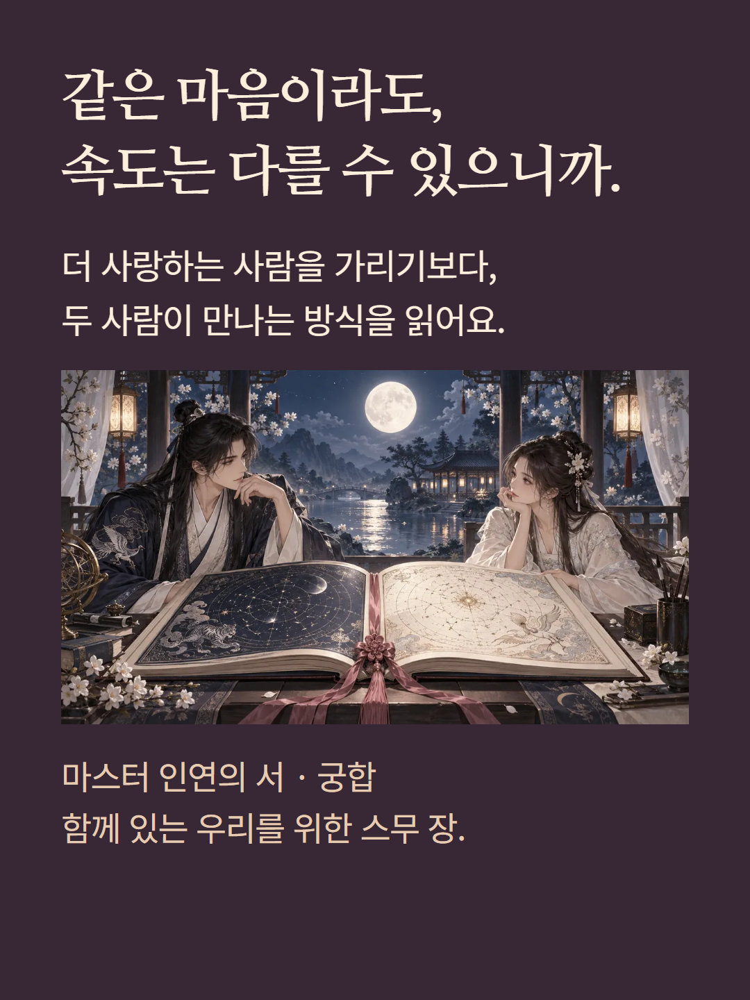
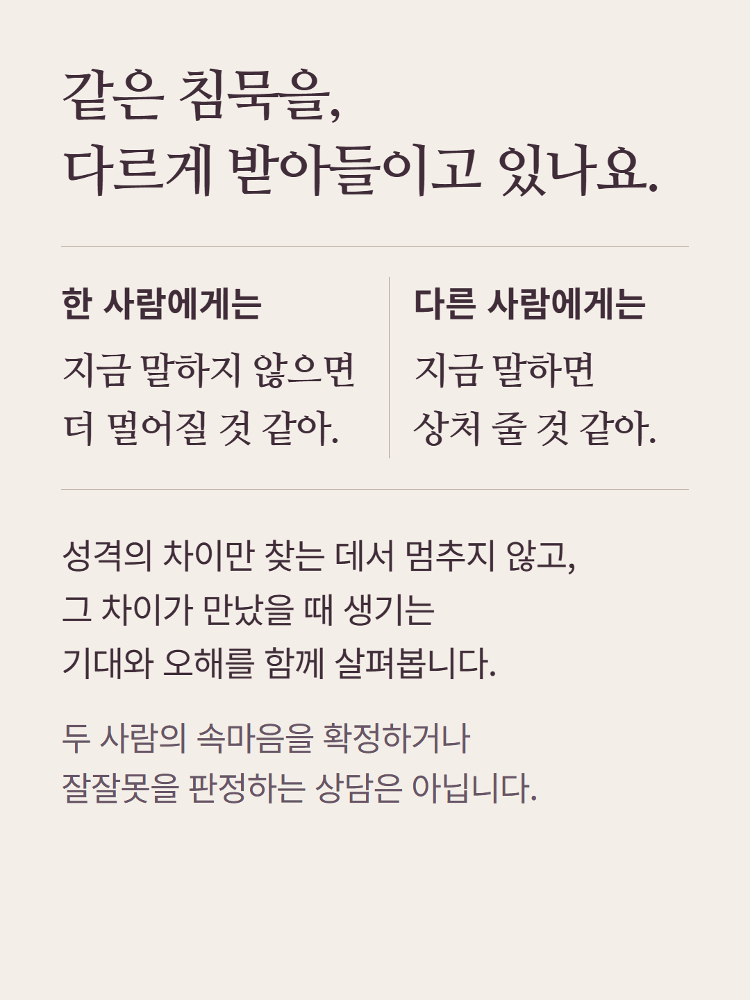
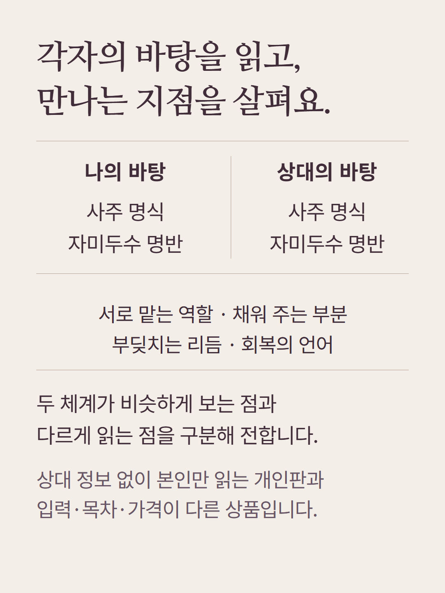
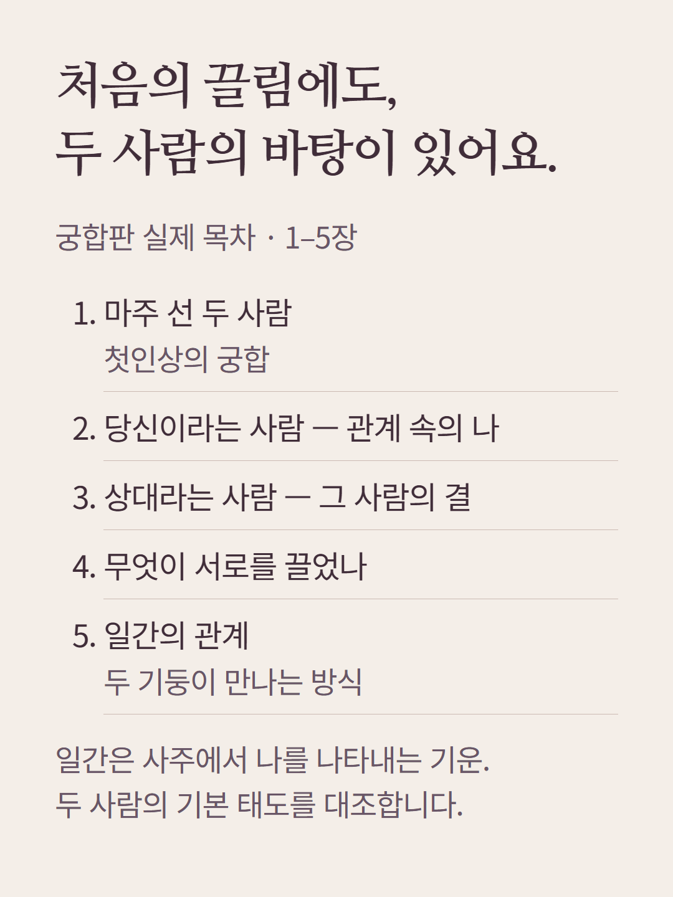
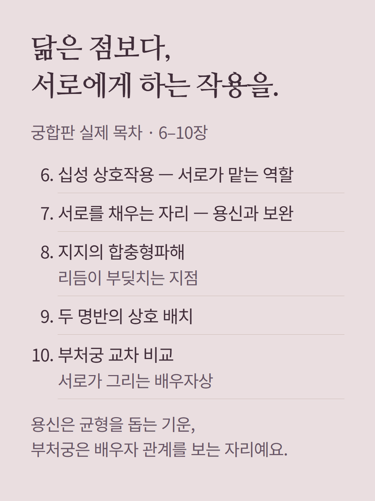
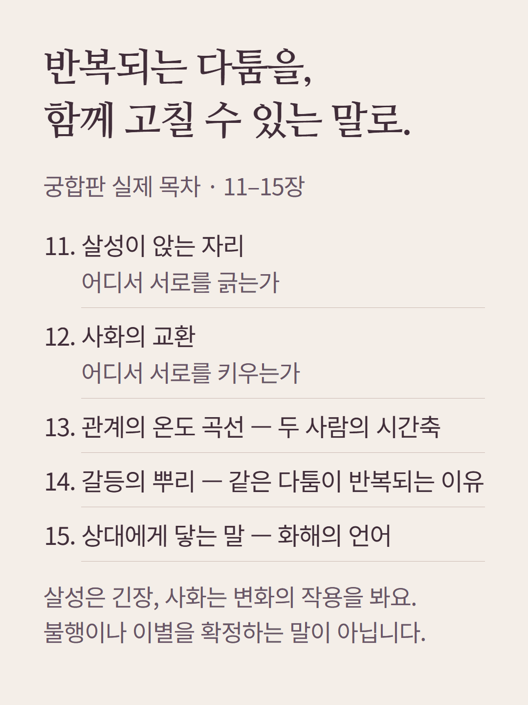
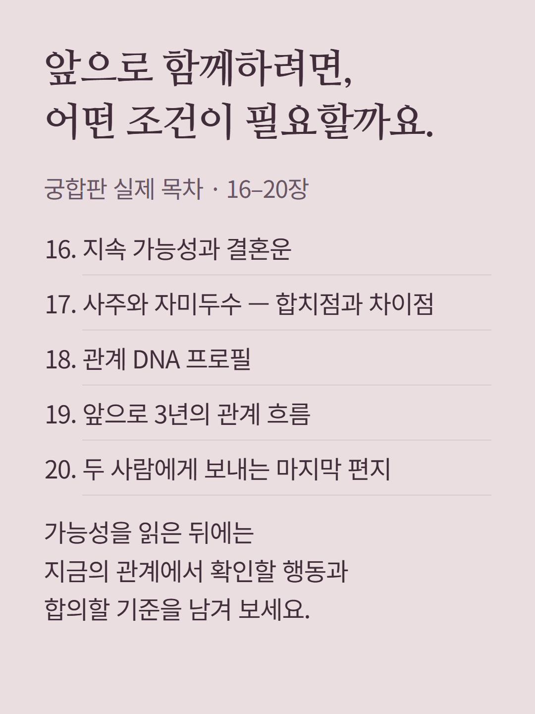
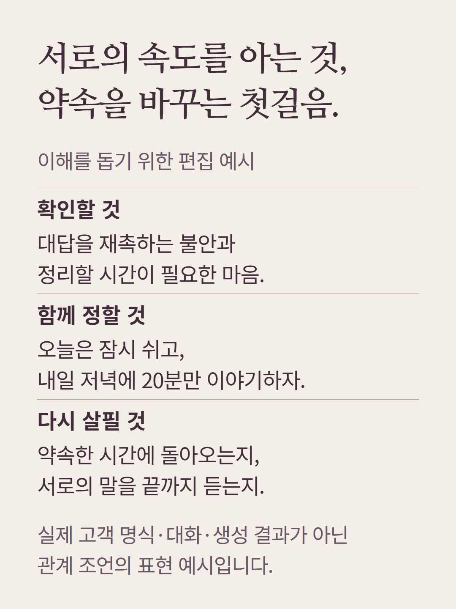
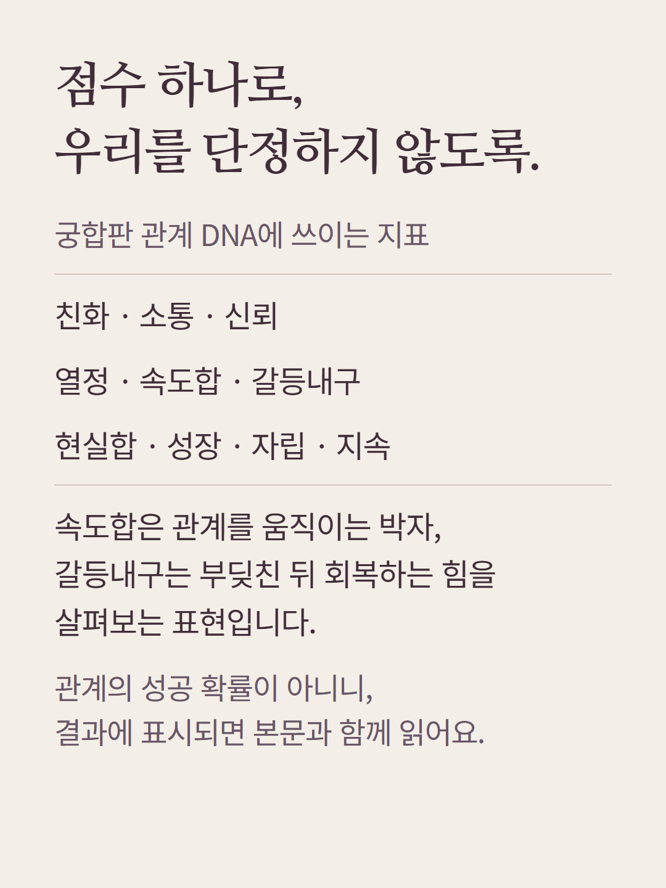
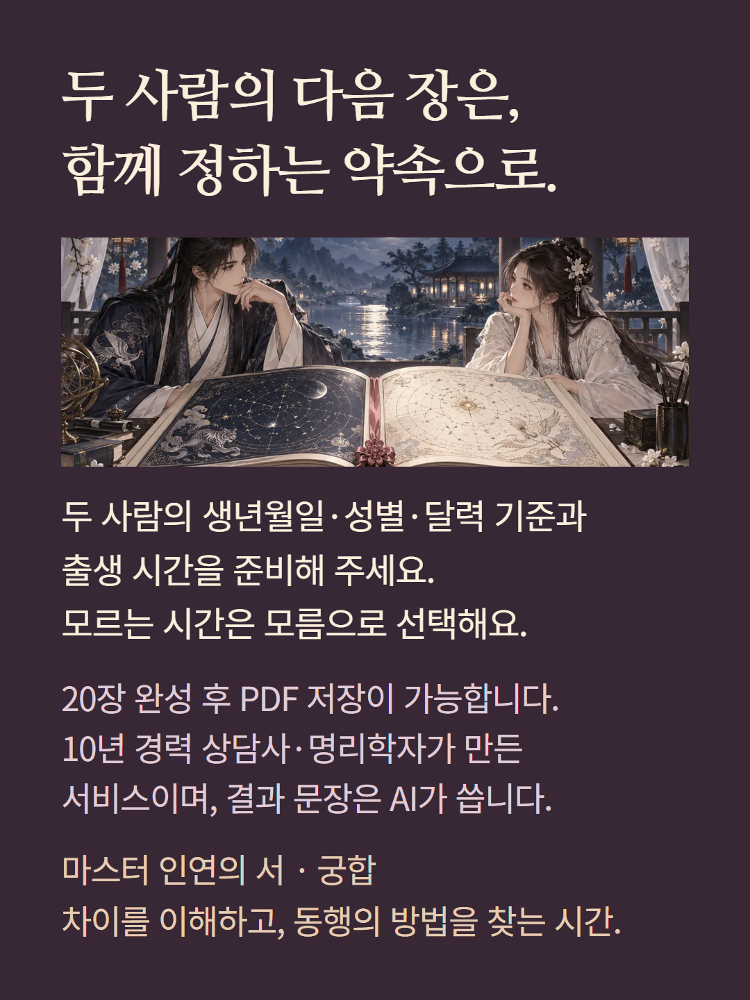

로컬 편집 원본 미리보기 · 실제 서비스 모바일 검수는 같은 폴더의 actual/notice/cta 파일 참고










궁합판은 본인과 상대의 출생 정보를 함께 읽는 별도 상품입니다. 20장은 개인판 20장과 다른 구성으로 합산되지 않습니다. 예시 대화는 이해를 위한 편집 예시이며 실제 고객 결과가 아닙니다. 관계 DNA는 해석 지표로 두 사람의 가치나 관계 성공 확률을 측정하지 않습니다. AI 해설이며 개별 결과의 사람 집필·감수를 뜻하지 않습니다. 삽화의 책은 디지털 결과를 표현한 것으로 실물 배송되지 않습니다.